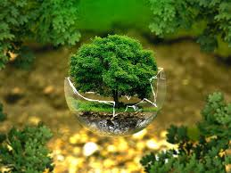

La naturaleza es un concepto utilizado para referirse al mundo material o universo material, incluyendo los fenómenos del mundo físico, la materia inerte generada como parte de procesos sin la intervención humana, y al fenómeno de la vida, que incluye también a los humanos.

Las personas rara vez encuentran ambientes absolutamente naturales en la Tierra, y la naturalidad generalmente varía en un continuo, desde el 100 % natural en un extremo hasta el 0 % natural en el otro.